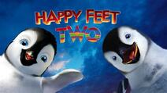

RESEÑAS
Praesentium voluptatum deleniti atque corrupti quos dolores et quas molestias excepturi sint occaecati cupiditate non provident, similique sunt in culpa qui officia deserunt mollitia animi, id est laborum et dolorum fuga. Et harum quidem rerum facilis est et expedita distinctio. Nam libero tempore, cum soluta nobis est eligendi optio cumque nihil impedit quo minus id quod maxime placeat facere possimus, omnis voluptas assumenda est, omnis dolor repellendus.
RESEÑASRECIENTES:
- Happy Feet Two (2011)
Pésima, no tiene una historia muy clara y se puede resumir con pocas palabras, nada tiene sentido y la mayoria de fragmentos que tiene son innecesarios (como por ejemplo el exceso de bailes sin sentido), las mejores escenas son las de los krills que ni siquiera son protagonistas. - "Cars 2" (2011)
Voy a ser sincero esta película fue genial para mi y también parte de mi infancia diga lo que quieran. john lasseter se esforzó era solo porque le gustaba las peliculas de espias pero ustedes no la apreciaron y por eso es la pelicula mas odiada solo espero que lo lean y compredan. - "The Emoji Movie" (2017)
Malgaste mucho de mi tiempo al ver esta porquería. La peor hora y media de mi vida. La película es aburridísima. Los personajes son estúpidos sobre todo el idiota de hi5 (la mano), aparte de que el dueño del celular que se llama Alex es un completo imbecil. Le empieza a sonar el celular en media clase y en lugar de poner el celular en silencio o apagarlo de plano decide desinstalar la aplicación.